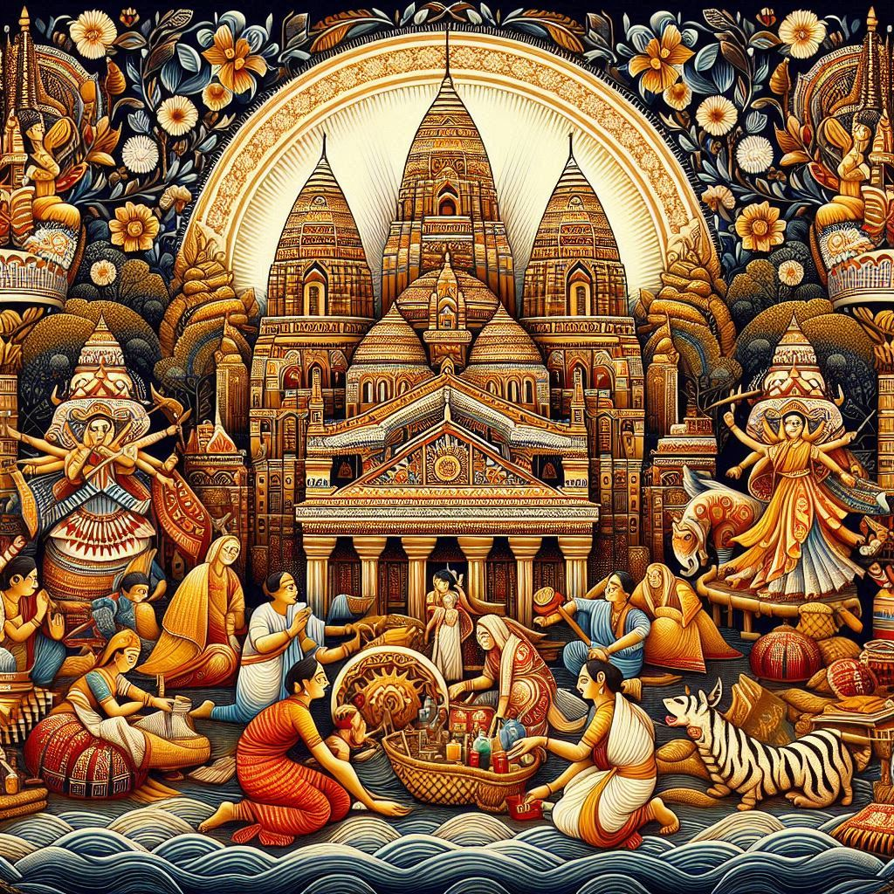
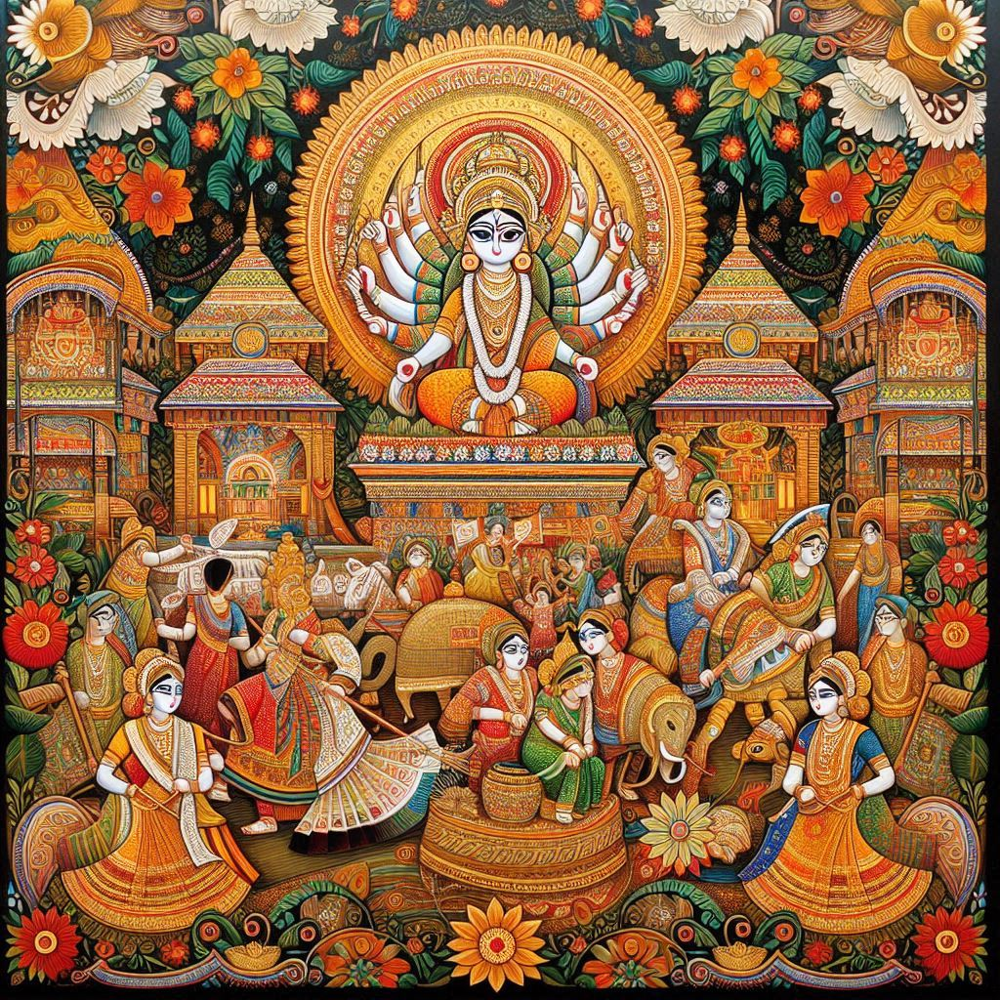

West Bengal is a state rich in traditions, with a vibrant cultural heritage that blends history, art, festivals, music, dance, and cuisine. The traditions of West Bengal are deeply influenced by the state’s history, religion, and diversity. Here’s an overview of some of the most significant traditions:
1. Festivals
- Durga Puja: The most important festival in West Bengal, celebrated with grand processions, decorated idols, cultural performances, and community feasts.
- Poila Boishakh (Bengali New Year): Celebrated with family gatherings, festive foods, and traditional rituals.
- Kali Puja: Honors goddess Kali, celebrated with prayers and rituals for strength and protection.
- Saraswati Puja: A festival dedicated to Saraswati, the goddess of knowledge, music, and arts, widely celebrated in educational institutions and homes.
- Makar Sankranti: Marks the transition of the sun into Capricorn, celebrated with kite flying and the preparation of sweets like **tilkut**.
2. Cuisine and Food Culture
- Rice and Fish: The staple diet, known for its mustard oil flavor and spices like mustard seeds, cumin, and fenugreek.
- Sweets: Iconic sweets like **rasgulla** and **sandesh**, along with **mishti doi** (sweetened yogurt).
3. Art, Music, and Dance
- Rabindra Sangeet: The music tradition of West Bengal, with songs written by Nobel laureate Rabindranath Tagore.
- Baul Music: A form of folk music by wandering minstrels expressing spiritual themes.
- Classical Dance Forms: Includes **Kathak**, **Odissi**, and regional dances like **Chhau** and **Folk dances**.
- Puja Rituals and Traditional Art: Includes crafts like **alpana**, **kantha stitching**, and **terracotta** work.


4. Traditional Clothing
- Saree: Worn by women, with popular varieties like **taant** and **Baluchari sarees**.
- Dhoti and Kurta: Worn by men, often paired with a **punjabi** or **lungi** for traditional events.
- Tant Sarees: Handwoven cotton sarees, ideal for the summer season.
- Lungi: Worn by men in rural areas, especially during hot weather.
5. Rituals and Religious Traditions
- Annaprashan: The traditional ceremony where a baby eats solid food for the first time, usually rice.
- Bengali Marriage Traditions: Elaborate wedding rituals like **gaye holud** and **sindur dan**.
- Muhurta: An auspicious time believed to bring good fortune for starting important events.
6. Bengali Literature
Bengali literature has a rich tradition with writers like **Rabindranath Tagore**, **Kazi Nazrul Islam**, and **Bankim Chandra Chattopadhyay**, playing significant roles in shaping the literary heritage of the region.
7. Handicrafts and Art
- Terracotta Art: West Bengal is known for its **terracotta** temples and handicrafts.
- Kantha Embroidery: Hand-stitched textile art often depicting daily life, nature, and folk motifs.
8. Spirituality and Philosophy
West Bengal has been a center of spirituality, with movements like the **Brahmo Samaj**, **Vishnuism**, and the **Ramakrishna Mission** playing significant roles in the cultural and spiritual life of the region.
Conclusion
The traditions of West Bengal are a vibrant mix of historical, religious, cultural, and artistic elements. From grand festivals like Durga Puja to rich culinary traditions, classical music and dance, and handwoven fabrics, the state's heritage reflects its deep cultural roots and the influence of diverse communities. These traditions continue to thrive, shaping the identity of West Bengal and its people.